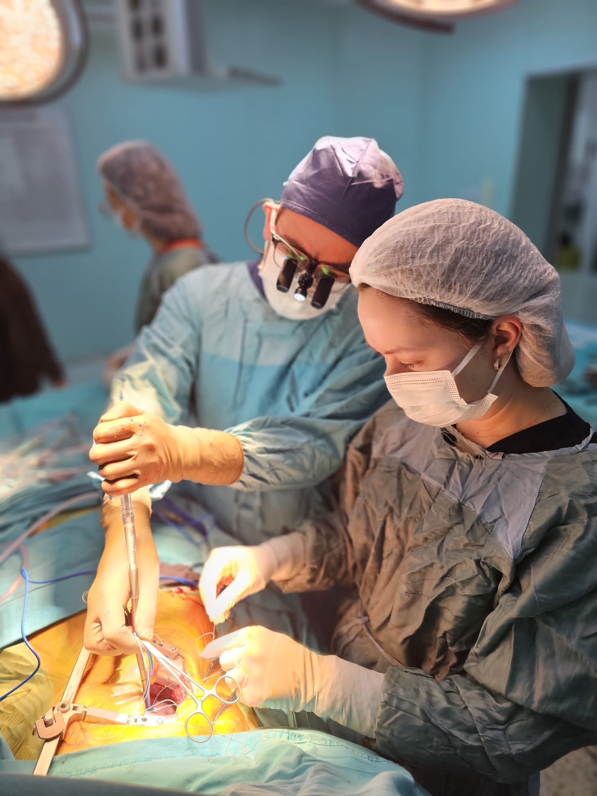
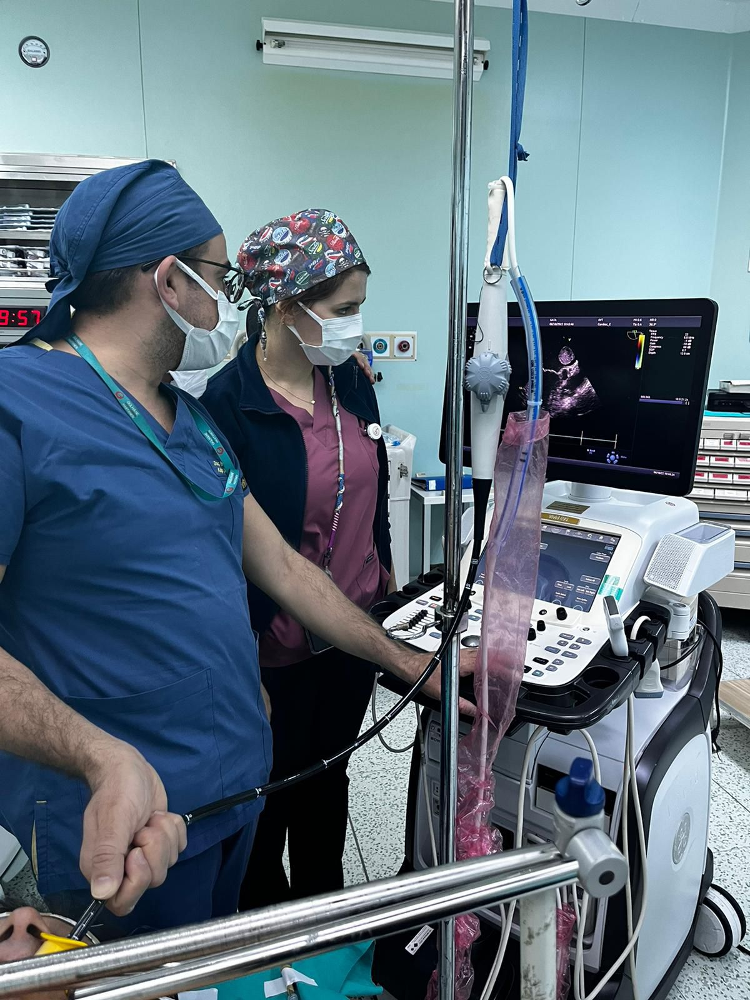

Normal bir insanda kalp günde ortalama 100 bin kez kasılmakta ve kan pompalamaya devam etmektedir. Bu işlem sırasında pompalanan kalp kapaklardan geçerek vücuda ulaşmaktadır. Kalp içerisinde 2 büyük ve 2 küçük olmak üzere 4 odacık bulunmaktadır. Sol taraftaki odalar temiz; sağ taraftaki odalar ise akciğerlere gidecek olan kirli kanı kanın geçmesini sağlamaktadır.
Kalp kapakları birtakım faktörler ile sağlık problemleri oluşturulabilmektedir. Sıklıkla doğuştan kalp kapak problemi oluşabileceği gibi sonradan kazanılan kalp kapak hastalıkları da bulunmaktadır. Bu hastalıklar günümüze konforlu bir şekilde tedavi edilebilmektedir.

Kalp kapaklarında teşhis edilen problemler farklı yöntemler ile tamir ve tedavi edilebilmektedir. Öncelikli amacın kalp ve damar sağlığının korunduğu tedavi yöntemleri; ilaçlar ve cerrahi müdahalelerdir. Hasta öncelikle ayrıntılı bir müdahaleden geçmektedir. EKG, Anjiyo, EKO gibi tetkikler uygulanarak hastalığın derecesi kesin olarak teşhis edilmektedir.
Cerrahi müdahaleye karar verildiği takdirde kalp kapaklarının düzeltilmesi işlemi gerçekleştirilmelidir. Bu süreçte hastalar nitelikli bir şekilde bilgilendirilmelidir. Bioprotez adı verilen kalp kapak değiştirme işlemi uygulanan hastaların ilaç kullanması gerekecektir ve yıllar sonra tekrar kalp kapak sorunu yaşayabilme olasılıkları vardır.
Kalp sağlığı insan yaşamı için en önemli olgular arasındadır. Bu nedenle gerek yeni doğmuş bebeklerin gerekse ileri yaştaki insanların mutlaka ayrıntılı kalp muayenesinden geçmesi gerekmektedir. Öyle ki hiç belirti vermeyen ancak aniden semptomların yaşanmasına neden birtakım kalp hastalıkları bulunmaktadır.
Kalp kapağı hastalıkları da gerek doğumsal gerekse de sonradan edinilmiş şekilde görülebilmektedir. Kalp kapağı sorunlarında tedavi öncelikle kalbi ve kapakları korumak ve yaşanan deformasyonun tamir edilmesi üzerinedir.
İnsan vücudundaki her organın oksijene ihtiyacı bulunmaktadır. Kalp ise ihtiyaç duyulan bu oksijenin kan yolu ile taşınmasını sağlayan temel organdır. Dolaşım sisteminin merkezi olan kalpte 4 odacık bulunmaktadır ve oksijen üretimi ve vücuda yayılmasının sağlanması için bulunan damarlar ile kapaklar bu odacıklar arasında bulunmaktadır.
Kalp kapak problemleri insanın günlük yaşamını sekteye uğratmasının yanı sıra ilerleyen süreçte hayati tehlikeye de neden olabilmektedir. Bu nedenle mutlaka tedavi edilmesi gerekmektedir. Kalp kapaklarındaki problemin nedeni ve derecesine bağlı olarak uygun tedavi planlaması yapılmaktadır. Hastanın genel sağlık durumu da tedavi planlamasında belirleyici önemli faktörlerden biridir.
Kalp kapak hastalıkları; mekanik ve biyolojik kapak cerrahileri teknikleri ile değiştirilebilmekte ya da kapak tamiri yöntemi ile tedavi edilebilmektedir. Bu uygulamalar gerek açık gerekse de kapalı ameliyat yöntemleri ile uygulanabilmektedir. Günümüzde kalp kapak cerrahileri minimal invaziv kalp ameliyatı ve koltuk altı kalp ameliyatı yöntemleri ile konforlu bir şekilde gerçekleştirilebilmektedir.

Romatizmal ateş, ileri yaşa bağlı dejenerasyon, doğumsal biküspit aort hastalığı (doğuştan aort kapağının 3 yaprakçık yerine 2 yaprakçık şeklinde olması.
Aort darlığının tedavisinde uygulanan açık kalp ameliyatında yapısı bozulmuş olan kapağın yerine metalik veya biyoprotez kapak yerleştirilir. Metalik kapak kullanımı sonrasında ömür boyu kan sulandırıcı ilaçların kullanımı gerekmektedir. Aort kapağının yapısının bozuk olduğu kimi durumlarda (hastanın yaşının genç olması, hamilelik beklentisi veya kan sulandırıcı ilaç kullanmasının sakıncalı olduğu durumlar) ise biyoprotez kapak ile replasman veya kapak tamiri yöntemleri uygulanabilir. Her iki durumda da bir süre sonra tekrar operasyon geçirilmesi ve metalik kapakla değişimin yapılması gerekebilir. Aynı seansta birden fazla kapağa müdahale edilebileceği gibi beraberinde koroner bypass gibi ek cerrahi girişimler de uygulanabilir.
Marfan sendromu gibi bağ dokusu hastalıkları, aort anevrizmaları, travma, kardiyomiyopati gibi hastalıklardan sonra ortaya çıkar. Aort darlığından farklı olarak kalbin ileri doğru gidişinde kısıtlama olmamakla beraber kalp atımından sonra kan geriye sol ventrikül içine döner. Bu hastalıklar ile ortaya çıkan yetmezlik durumunda uygulanan açık kalp cerrahisinde de, aort kapak aynı stenozda olduğu gibi metalik, biyoprotez kapaklar ile replasman yapılır. Ayrıca kapakların fonksiyonel yetmezliği durumunda tamir ve kapak koruma yöntemleri uygulanabilir.
Romatizmal ateş, mitral prolapsus, korda rüptürü, enfektif endokardit, iskemi sonrası ortaya çıkabilir. Mitral kapak yetmezliğinde kanın kalp içerisinde göllenmesi nedeniyle kalp üzerinde yüklenme oluşur. Mitral kapak yetmezliğinin nedenine göre aynı mitral stenoz ameliyatlarında olduğu gibi mekanik kapak, biyoprotez kapak ile replasmanı yapılabilir. Aynı şekilde kan sulandırıcı kullanması sakıncalı olan veya mitral kapağın anatomik olarak yapısının sağlam olduğu ancak kapağın kapanmasına engel olan durumlarda (ileri hipertansiyon ile kalp kasında büyüme, korda rüptürü, iskemi vb) mitral kapak tamiri ameliyatı uygulanabilir. Tamir esnasında “ring” adı verilen kapak benzeri cihazlar kullanılır ve ameliyat sonrası kısa dönem düşük doz kan sulandırıcı kullanılabilir.
Toplumda %1-2 oranında görülür ve özellikle genç bayanlarda saptanmaktadır. Bu hastalarda ritim problemi çok sık görülür ve çok nadiren tıbbi tedaviye yanıt vermeyen durumlarda açık kalp operasyonu gerekebilir. Ameliyat olduğunda tedavi mitral kapak yetmezliği ameliyatında uygulanan yöntemlerin aynısıdır.
Kapak hastalığına sebep ne olursa olsun fonksiyonları bozulmuş bir kapak görevini yapamaz ve bu da kalbe zarar verir. Cerrahi olarak kalp kapağının fonksiyonlarını tam olarak yerine getirilmesi hastanın ameliyattan maksimum yararı sağlaması açısından önemlidir. Özellikle mitral kapakta olmakla birlikte diğer tüm kapaklarda hedef doğal kapağın korunarak tamir yöntemleri ile onarılmasıdır. Son yıllarda hem tanı yöntemlerindeki gelişmeler hem de bu konuda deneyimlerimizin artmasıyla uygun tamir yöntemleri ile kapak değişimi olmadan hastanın doğal kapağı tamir edilebilmekte ve çok iyi sonuçlar elde edilebilmektedir. Şunu unutmamak gerekir ki her kapak tamir için uygun olmayabilir. Bu durumda yukarıda bahsettiğimiz şekilde kapak ameliyatları uygulanır
Trikuspit ve pulmoner kapakların hastalıkları çok nadir olarak tek başına bulunmaktadır. Genelde aort ve mitral kapak hastalıklarına eşlik ederler ve tedavi edilirken bu hastalıklarla olan beraberliklerine göre plan yapılmaktadır. Özellikle trikuspit kapağın hastalığı diğer kapak hastalıklarına eşlik eder ve genelde yetmezlik şeklinde görülür. Tedavisinde ring annuloplasti operasyonu yapılabildiği gibi özel dikiş teknikleri ile de yetmezlik düzeltilebilir.
Özellikle aort kapak stenozları ile beraber koroner arter hastalığı sık birlikte bulunmaktadır. Belli bir yaş grubunu geçen ve kapak hastalığı bulguları veren hastalara koroner arter sistemini değerlendirmek üzere koroner anjiyografi uygulanmaktadır. Saptanan koroner arter hastalığı olması durumunda aynı seansta kapak operasyonu uygulanırken koroner arter bypass operasyonu da uygulanabilmektedir. Bundan başka doğumsal kalp bozuklukluları, çıkan aort anevrizmaları da aynı seansta opere edilebilmektedir.